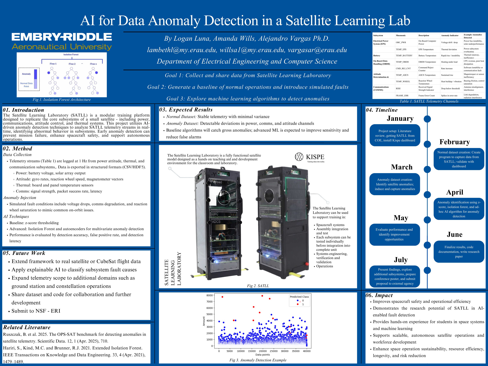
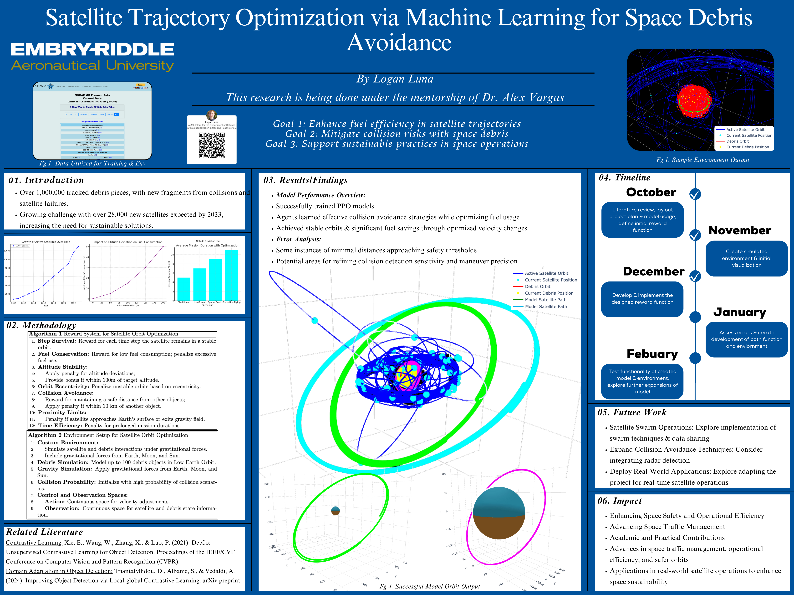
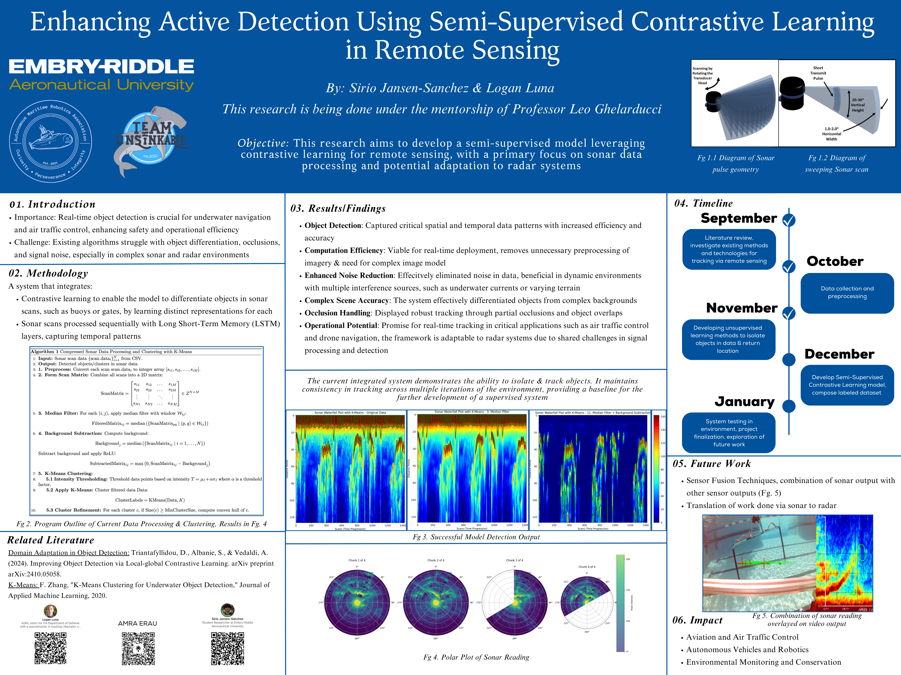

Research Areas
- Reinforcement learning for cyber defense and autonomous control
- Optimization algorithms and gradient normalization methods
- Signal-centric remote sensing (sonar, radar) and ML
- Autonomous aerial and underwater vehicles (sim-to-real)
- AI for sustainability in orbital mechanics and space traffic management
Current Projects
-
Milo: Magnitude-Invariant Learning Optimizer (2025–Present).
A group-wise gradient normalization optimization method designed to reduce magnitude distortion in learning dynamics. Includes empirical testing across image classification, CNNs, and reinforcement learning tasks.
Research Posters
Below is a selected collection of research posters from 2022–2025, representing my work across reinforcement learning, optimization, sonar processing, and remote sensing.
Satellite Proposal Poster (2025)
This poster introduces the proposes a development framework for satellite anomaly detection. It outlines the motivation, mission impact, and design plan prior to full implementation.

Satellite Trajectory Research Poster (2024)
Displays the full research results for PPO-based orbital collision avoidance, including stabilized low-fuel orbits and debris-avoidance maneuvers. This poster was presented as the research matured into publishable form.

Hierarchical Dueling Q-Learning for Intrusion Detection (2024)
This poster outlines a two-agent Q-learning and Dueling DQN system for classifying and responding to cyberattacks. It demonstrates near-perfect binary and multi-class accuracy on large intrusion datasets.

Sonar Contrastive Learning Research (2024)
Presents a semi-supervised contrastive learning model for sonar-based object detection. Highlights both noise reduction strategies and adaptation potential for radar systems.

Autonomous Maritime Robotics Association Poster (2023)
This poster shows early work on underwater sonar-based detection, noise filtering strategies, and object tracking. It represents the foundation of later remote-sensing and sonar research.

Aircraft Detection & Kalman Tracking Poster (2022)
One of my earliest research posters, combining YOLO object detection with ORB keypoints and Kalman filtering for aircraft motion prediction. Demonstrates reliable tracking through occlusions and movement noise.